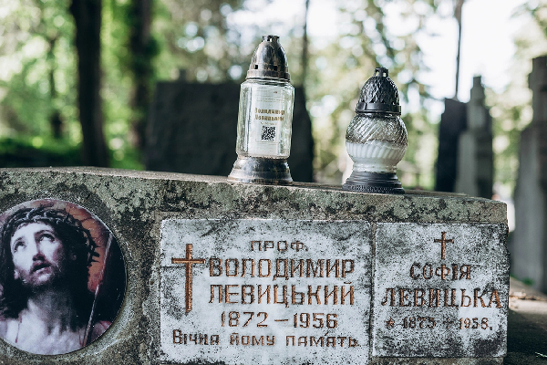
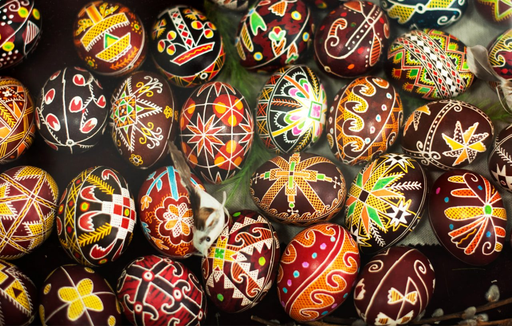
13.05.26
In 1848, a revolution broke out in Austro-Hungary, which spurred a number of liberal reforms, including the abolition of serfdom. The same year, Father Yosafat Kobrynskyi, who was a priest in the Myshyno village (currently in the Ivano-Frankivsk region), published “Manure — the Lifeblood of the Farm”, a manual for Ukrainian farmers to help them work the land more efficiently.
Kobrynskyi wasn’t an ordinary cleric. He could read in seven languages, studied in Vienna, was a trustee of the local deanery, and, in 1842, before he even became a priest, published a reading primer for Ukrainians, who lived mostly in villages, so they could learn to read and write in their spoken language.
Father Yosafat also had a dream: to establish a museum to preserve artifacts of local crafts. He fell in love with local folk art while traveling through the Hutzulia and Pokuttia villages, collecting ethnographic records and craftworks.
The road to fulfilling this dream was long and took a turn through establishing a Ukrainian Community House. Using the costs he procured by organizing ethnographic exhibitions, 62-year-old Kobrynskyi bought a plot of land in Kolomyia to build a house for “a large school with a dormitory, where 200 boys from poor families would have lodging and could attend industrial and craft schools, and also a library and a museum should be located in the Community House”.
Such ambitious plans demanded investment, so Father Yosafat contributed all his savings, encouraged local intellectuals to fund the project, and his supporters collected donations from local communities, traveling from village to village with donation boxes. Twenty years later, the project was finally launched, and in 1902, a solemn opening ceremony of the Community House took place. Unfortunately, Yosafat Kobrynskyi didn’t live to see it: he died a year before the final fulfillment of his life’s project.
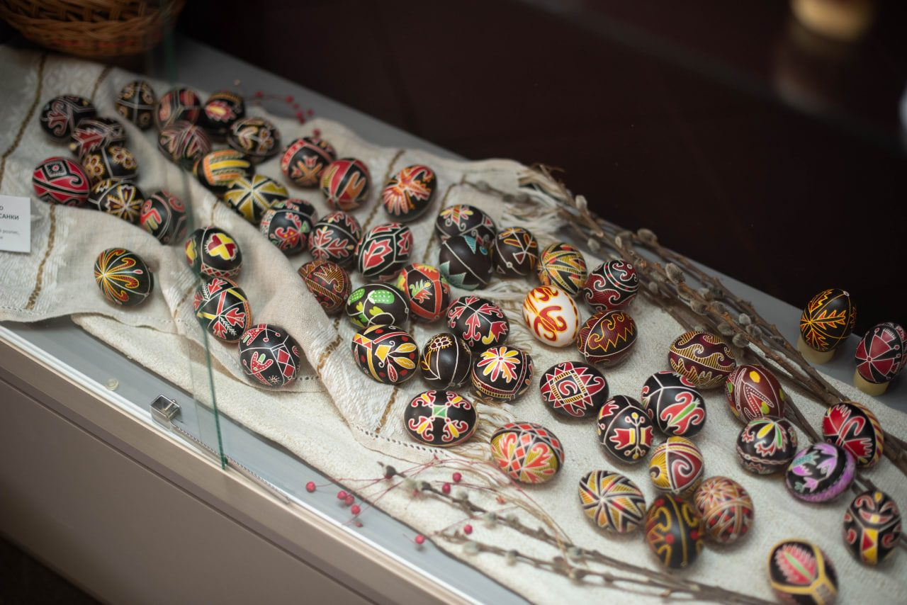
However, his second nephew, Volodymyr, who worked for a railway administration, didn’t leave the project unattended and finished establishing the museum collection. “While carefully examining museums in Geneva, Marseille, Paris, Vienna, Budapest, Bucharest, Constanza, and larger cities in Poland, I marveled at works of great and educated geniuses, but these were separate individuals of those nations. But examining our own Ukrainian culture, I marvel at the art not of individuals, but of the whole mass of the Ukrainian people. Only in a museum can one recognize the worth of one's people. That’s why, in our museum, we see that, despite the centuries-long enslavement, terrible oppression and serfdom, the innate culture of the Ukrainian people was not enslaved,” he said. In 1926, despite the challenges of the interwar period and the Ukrainians' lack of a state of their own, his efforts led to the formation of the museum collection, and in 1934, the Ukrainian Folk Museum “Hutzulia” was officially opened. Volodymyr Kobrynskyi himself collected around 300 exhibits for the museum.
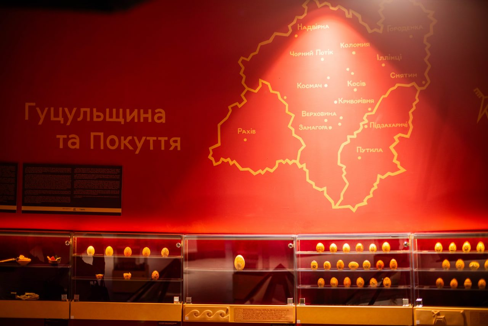
Nowadays, it’s the Yosafat Kobrynskyi National Museum of Folk Art of Hutzulia and Pokuttia, with the Museum of Pysanka Art as its branch. There, some of the most fragile artifacts of the Ukrainian folk culture are preserved: a collection of over 12 000 pysankas (Easter eggs decorated and dyed using traditional techniques) and decorative eggs from all over Ukraine and 37 other countries. But it wasn’t always like that.
“Watch mother drawing with her marvelous pen
wax patterns on the whiteness of an eggshell…”
Here and further, excerpts from a poem “Pysanka” by Ihor Kalynets
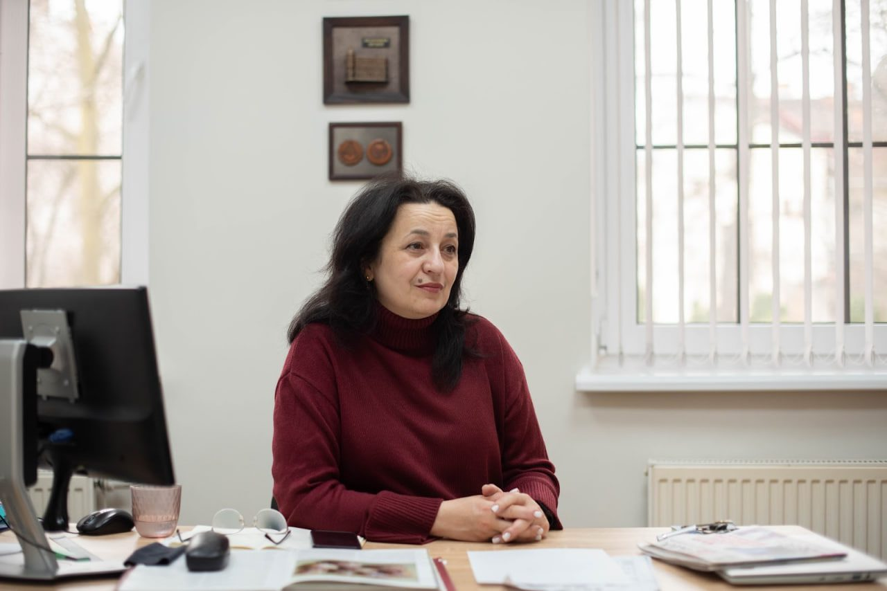
Research fellows have been collecting pysankas during field expeditions since the museum's very beginnings. But because of preservation problems, they were more of an auxiliary fund, Oksana Yasinska, Head of the Museum of Pysanka Art, says. Today, pysankas are usually made from eggshells emptied of yolk and white, but traditionally they were made from “full” eggs, which were to be consecrated on Easter. The inner contents of an egg easily deteriorate and rot, destroying the artifact in the process. So the employees had to find a way to remove the “innards” of a pysanka, while keeping the decoration intact.
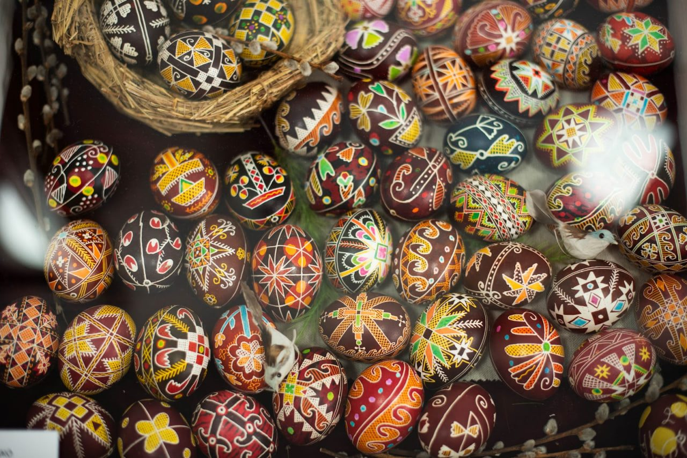
“Experts were trying out various ways of lengthening pysanka’s life: making two holes and filling it with sawdust, pouring hot wax, or soap inside. But the best and most effective way of conserving and restoring pysankas was invented by employees of the ‘Hutzulia’ Museum in Kolomyia: Lubomyr Krechkovskyi, a long-term museum curator, and Maria Boledziuk, a lab assistant. The essence of this method is to use the blunt end of a scalpel or knife to crack the egg open along its broadest part by gently tapping it. An experienced restorer senses when it's time to open the two halves.
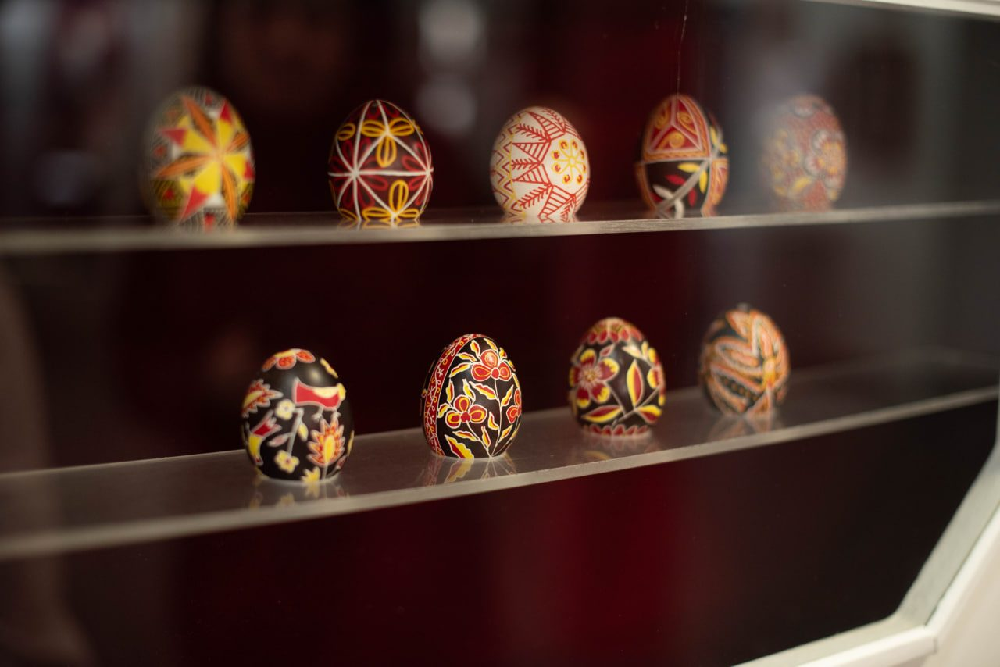
Then, it’s time to remove the contents: the white, the yolk, and the film under the shell, because it’s prone to rot and collecting moisture, and may cause damage. Then, the inner surfaces have to be disinfected with alcohol. And after that, a widely known method of papier mâché: small pieces of fiber paper from newspapers, and PVA glue. One part is glued over, leaving some distance to the brinks; the other is made with small protrusions (5–10 mm). Then the two halves of the pattern are matched at the break, and the egg is glued together. After the process, the pysanka has to dry for 2–3 weeks, and won’t break anymore,” Oksana Yasinska explains.
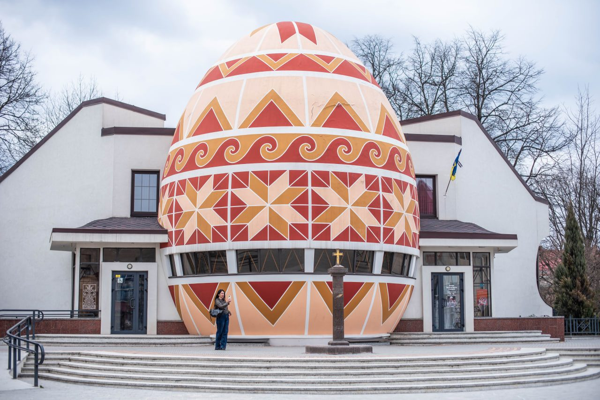
Only after inventing this method did a full-fledged collection of pysankas begin to form at the museum, and in 1987, it became the basis for the Museum of Pysanka Art. At first, it was located in the premises of the Church of the Annunciation of the Blessed Virgin Mary, an architectural monument of the 16th century. Later, in 2000, a new building was constructed for it, the famous “highest pysanka in the world”, 13 meters high.
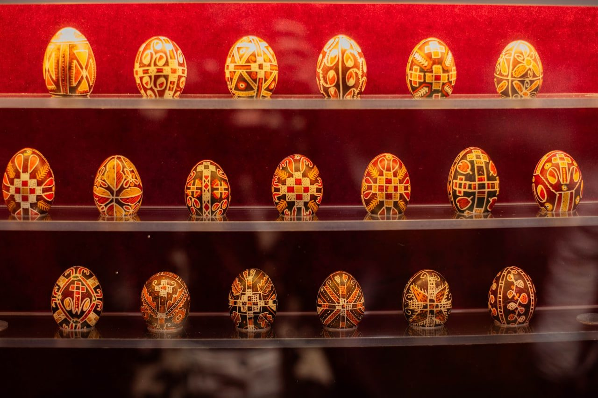
All pysankas that become part of the museum funds undergo restoration beforehand. “If a pysanka is made with a technique of etching in the acetic acid, then the shell is weakened, and it’s very hard to break such a pysanka into two halves; it may shatter. Only after the conservation, pysankas become part of the museum collection,” Oksana adds. But nowadays, restoration of pysankas is a very niche profession: there are only a couple of craftsmen with the necessary skills.
“...A pysanka is traveling through the bowls
with water painted with onion golden,
with herbs and roots of many tints enriched,
with plants of spring and fall in many colors,
the pysanka is burning fiery bright
in filigree of lines entwined…”
On the outside, pysankas and their decorations are not restored; they are the artistic work of the author and are left intact. The brightness and durability of the color depend, first of all, on the type of dye and the manufacturer, Oksana Yasinska explains.
To preserve the colors for as long as possible, only artificial lighting is used in the museum, and sunlight is avoided. In the rooms where the collection is exhibited, there are no windows. Even though the windows were constructed at first, natural lighting was later blocked. Now it also allows for maintaining the temperature regime and avoiding excess moisture.
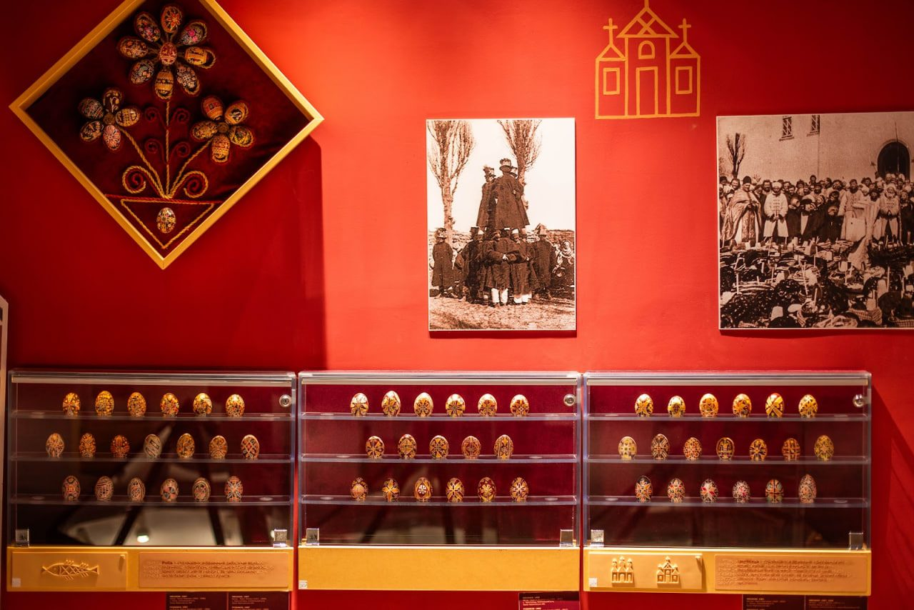
Traditionally, natural pigments from local plants were used to dye pysankas. That’s why yellow is used so often on old pysankas. It was derived from onion skins or spring flowers. Blackberries, wild elderberries, moss, and birch leaves were used for green; a thick brew from alder buds, horse chestnut leaves, or walnuts gave brown; and alder bark and tatar maple leaves were used for black.
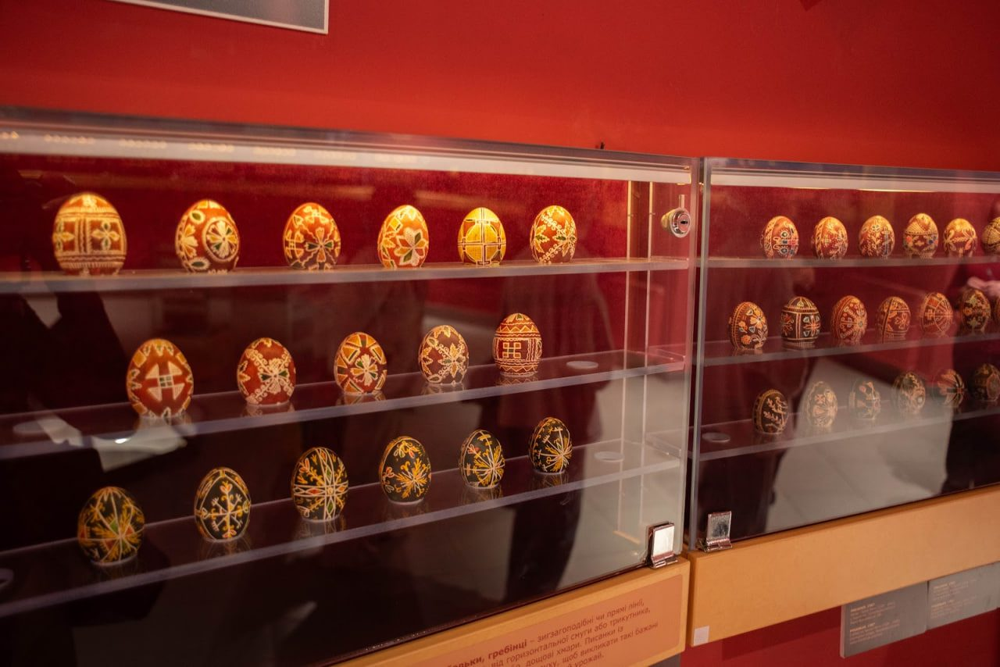
The rarest color in traditional pysankas is bright red, because it’s hardest to achieve. Some artists used deer horns or mahogany bark (native to Brazil), but it was rather rare. Blue color was also unusual; it was achieved, for example, with poplar or blue mallow flowers.
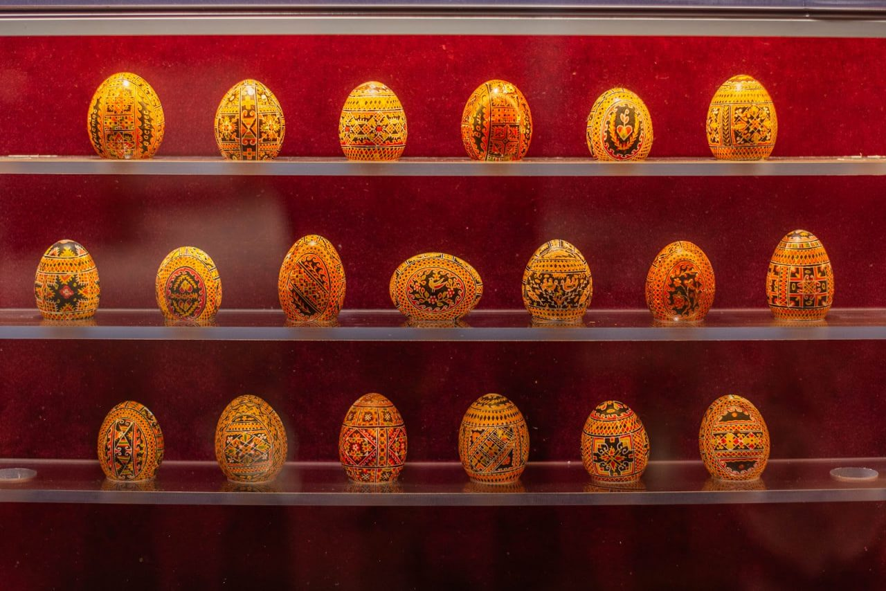
Nowadays, aniline dyes are most commonly used; they were invented in the second half of the 19th century and made dyeing much cheaper across many industries, especially textiles. (By the way, British chemist William Henry Perkin made his discovery during the Easter holidays.) However, even now, some artists use natural pigments. Such pysankas are less bright and stand out in the collection for their pastel colors.
“...And now it’s like a marvelous world,
like bells of sunbeams in the summer,
dewed flower petals in the morn,
deer in the young March grass meander.
In vivid greenery, orchards, encased,
entwine their leaves in patterns,
the finest lace from Kosmach scintillates
like geometric jewels scattered…”
Patterns on pysankas may be rather diverse, but some are more characteristic of a particular region. Like, for example, geometric patterns for Hutzulia. In Chornyi Potik village in the Ivano-Frankivsk region, plant motifs and heart-shaped petals are added. In some places in the Lviv region, there are purely plant patterns, Iryna Blonska, a senior research fellow in the museum, says.
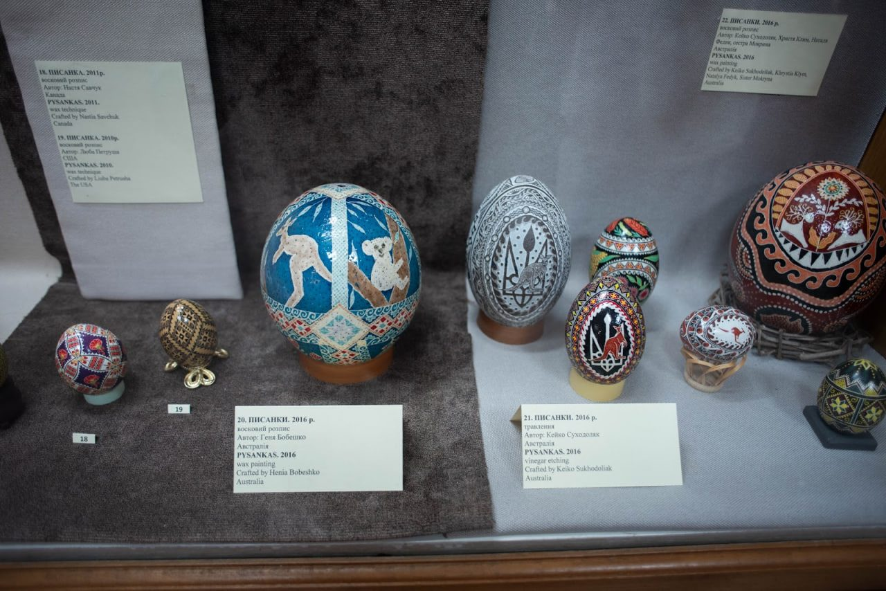
Besides these, images of animals (zoomorphic symbols), people (anthropomorphic symbols), churches, and crosses (sacred symbols), and even rakes, the symbol of harvest, happen from time to time. Modern interpretations become even more varied: for example, the museum has in its collection a gift from the Australian diaspora featuring a kangaroo next to the Ukrainian coat of arms.
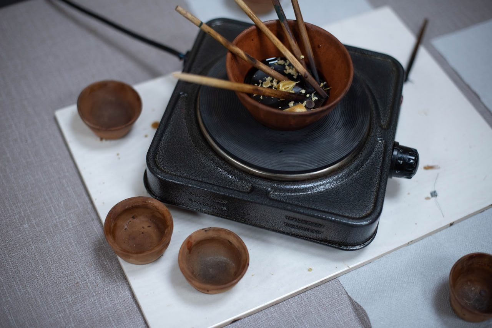
To create a pattern, a special metal pen with a wooden handle is used for pouring thin lines of hot wax. Modern artists, however, use electric wax pens: they allow for very fine lines, making the pattern even more filigreed.
“I drifted to the world of childhood dreams
in lullabies of meadow flowers…
Like pysankas, in mother’s palms
radiant suns from heaven showered”
Despite the collection being formed since the beginning of the 20th century, very little from those times survives. During World War II, the German military looted the “Hutzulia” museum, taking many of its exhibits. After the war ended, representatives of the repressive Soviet regime confiscated numerous valuable exhibits that were deemed “unsuitable” or having “religious and nationalistic” symbols. Volodymyr Kobrynskyi was fired, and the museum was first closed, and then “reorganized”. Only 40 pysankas from Kosmach village in the Kolomyia district survived.
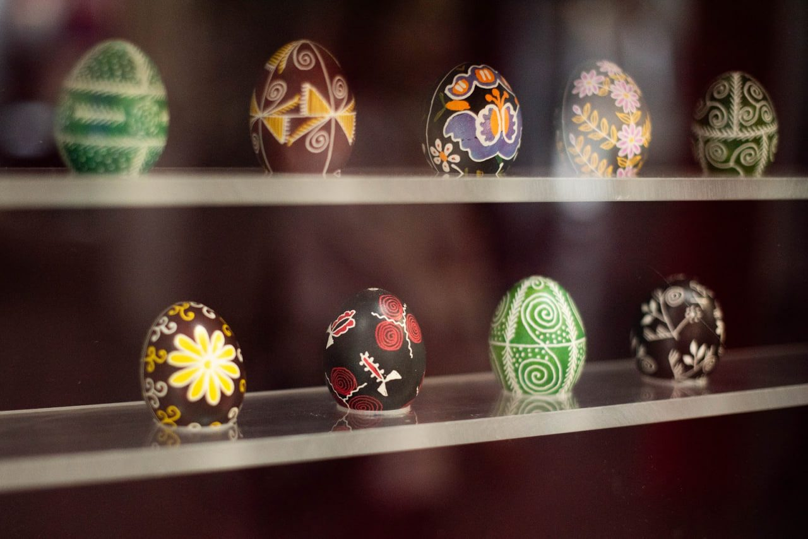
That’s why, at the beginning of the full-scale invasion, the collection was promptly dismantled, packaged, and moved to a safe space. But in early April 2022, the exhibition returned.
“Maybe it was a bit risky, but ‘Pysanka’ was reopened. Many internally displaced people visited us and wanted to find pysankas from their regions. It was poignant and meaningful. The museum was filled with people,” Oksana Yasinska recalls. Later, the museum returned to conducting school and tourist tours, and nowadays even foreigners come here: “Tomorrow, we are expecting a group from Poland, 16 people,” Oksana says. “A tour agency brings them here. It’s like bringing the peaceful past back.”
The Museum of Pysanka Art takes us back much further than before the full-scale invasion. The oldest pysanka here is 500 years old. “This pysanka is the oldest made on a bird egg, not just in our collection, but in all of Ukraine. Ceramic ones are found even from Kyivan Rus times, but these are not traditional pysankas. In 2013, during excavations at a water reservoir, archeologists found four fragments of a pysanka. They determined the age based on archeological strata. The archeologists knew about the method of egg conservation and restoration developed in our museum and decided to give it to us. A small fragment of the pysanka was missing, and our expert Olha Antohii skillfully restored and patched it”.
Currently, the replica of the oldest pysanka is exhibited in the museum, and the original is stored. Even visually impaired people can imagine what it looks like: the institution received a grant from the Ukrainian Cultural Fund for renovation, and among other things, Braille books and tactile plaques with examples of patterns from the most valuable and popular specimens were produced.
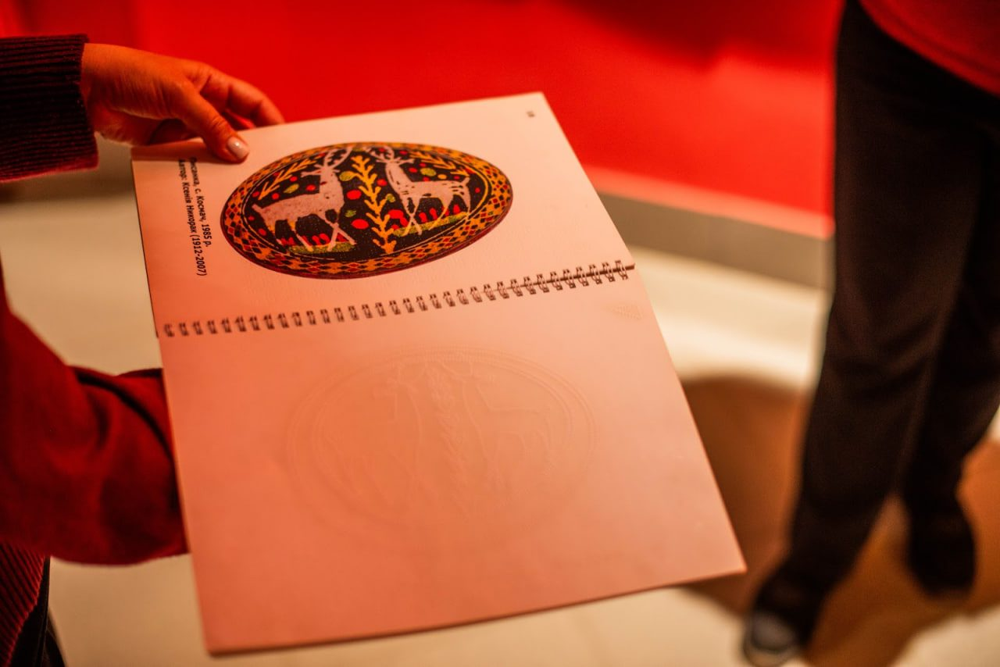
As the museum's operations focus on Hutzulia and Pokuttia, the bulk of the collection is dedicated to pysankas from these regions. However, there are replicas from various Ukrainian territories, created from specimens in an album published by the archeologist and ethnographer Serhii Kulzhynskyi in 1899. He based it on a private museum collection of Kateryna Skarzhynska in Lubny and collected over 2000 specimens. There are also miniature works of modern pysanka artists, and exhibits from the Ukrainian diaspora.
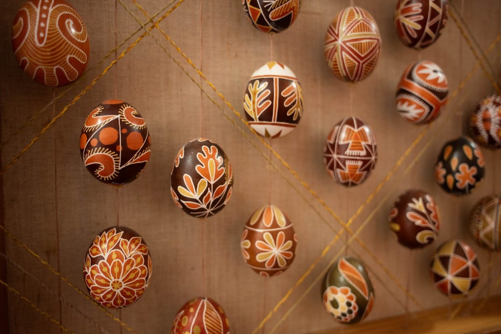
Among the vivid colors and variegated patterns, a collection of pastel pysankas stands out: light brown, greenish, and dim yellow eggs. “This collection has a history,” Oksana Yasinska says. “They were recreated based on pysankas that were stolen from the Kyiv Museum of Decorative and Applied Art during World War II. They were deemed lost for a couple of decades, but were uncovered in Germany by their inventory numbers. In the 2000s, this collection of pysankas, traditional to the Podillia region, was returned to Kyiv.”
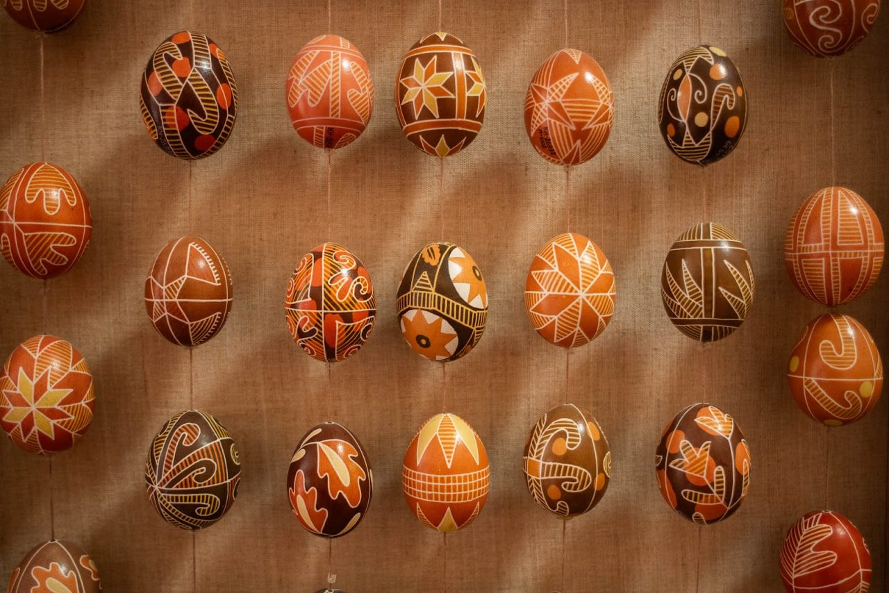
The tradition of making pysankas is preserved best in mountain regions, Oksana Yasinska explains, because they weren’t exposed to the destructive impact of the Soviet oppressive machinery as much: “They just didn’t reach those remote mountain villages.”
Pysanka was considered a religious object, and thus, the Soviets tried to uproot the tradition, especially in Naddniprianshchyna. According to data from the National Historical Library of Ukraine, during the Soviet occupation of Ukraine, only one scientific publication about pysankas was published, a book by Erast Beniashivskyi from 1968.
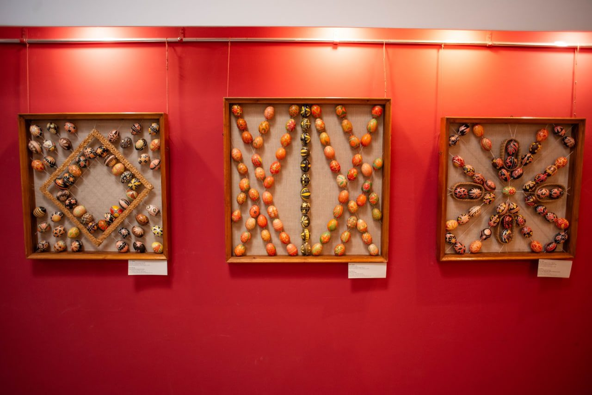
But even here, in the West of Ukraine, pysanka artists sometimes suffered: “In Soviet times, pysankas were destroyed. For example, Mykola Shkribliak, an ethnographer and the director of the Center of Culture and Art in Bukovyna, remembered going to the Kosiv fair with his mom before Easter and seeing the militia and the sanitary inspection confiscate and destroy pysankas from the artists who came to sell them, allegedly because of an epidemic threat. He was so shaken by it that, upon returning home, he hid all the family pysankas. He was afraid that they would be destroyed too. He didn’t even say anything to his parents”.
Nowadays, Kosmach is the biggest center of pysanka art. “The village itself is large, the largest in Hutzulia. And it’s safe to say that almost every family in Kosmach knows how to decorate pysankas. Not everyone does it professionally, but they surely know the tradition,” Iryna Blonska explains. Kosmach patterns are currently the most well-known and recognizable. Even in pysankas created by representatives of the diaspora in the 20th century, the influence of the Kosmach tradition is visible.
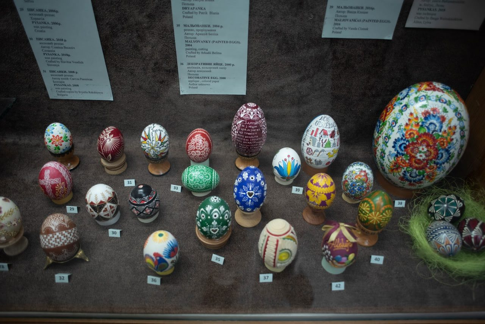
Ukraine, however, isn’t the only country where painting eggs for Easter is widespread. It’s characteristic of many neighboring countries, especially Romania, Poland, Lithuania, Slovakia, and the Czech Republic. Overall, eggs are decorated in various regions, but, of course, it isn’t always connected to Easter. So, the Persian tradition knows decorating eggs for the New Year. Painted eggs were found during archeological excavations in African countries, and the art of painting on eggshells still survives in China.
The egg is a universal symbol of life and rebirth, the feeling we all need so much after the severely harsh winter. And pysankas allow us to find it even in the darkest of times.
The reportage is published with the support of the Alfred P. Sloan Foundation.